Equal length is not equal delay: serpentine tuning under a field solver
We solved a bent differential pair and six ways of tuning it in openEMS. Matching the lengths exactly removed 44 to 75 % of the skew.
A differential pair that turns through a U-bend comes out of it with one trace shorter than the other. The usual fix is a serpentine on the short trace that adds the missing length back. A recent illustration of this made the rounds (@CorneliusWrites on X): at a 20 mil pitch the inner trace arrives about 9.5 ps early, and about 1.6 mm of serpentine puts it back in step.
The geometry in that picture is right. What it takes for granted is the step from equal length to equal delay. We wanted to know how good that step is, so we built the bend and six ways of tuning it, solved each one as a full four-port in a field solver, and looked at what arrives at the receiver.
In short: tuning that makes the two traces exactly equal in length left 2.3 to 5.2 ps of the original 9.3 ps. The worst offender was the densest accordion. A transmission-line model given the same lengths predicted less than 1 ps.
The bend is what geometry says
Two concentric arcs that turn through 180 degrees differ in length by π times their spacing, whatever the radius. At s = 0.508 mm (20 mil) that is 1.596 mm, or 62.8 mil. Multiply by √ε_eff / c and you have the skew.
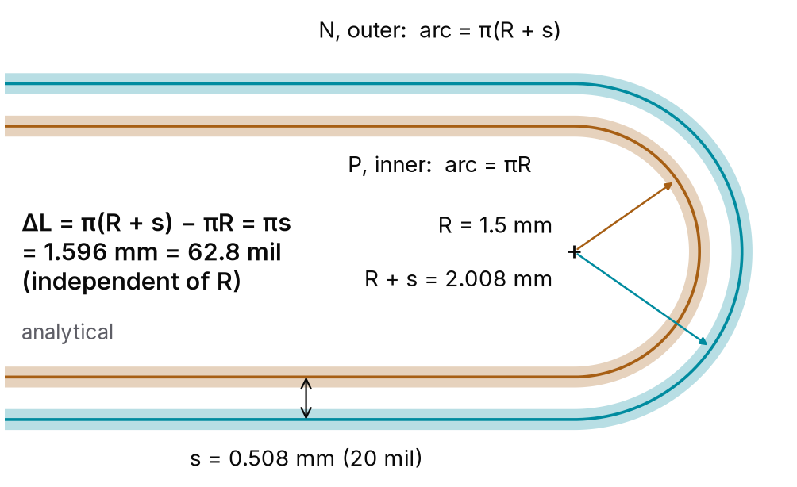
The U-bend: P is the inner trace, N the outer. The arcs differ by πs.The answer depends on which ε_eff you use. At ε_eff = 3.8 it is 10.4 ps; the 9.5 ps in the illustration corresponds to ε_eff = 3.18. Our stackup (0.2 mm of ε_r 4.3 under 0.25 mm traces) has a single-line ε_eff of 3.15 by the Hammerstad–Jensen closed form, which gives 9.45 ps. The field solver says 9.3 ps. For the untuned bend, geometry is within 2 %.
Six ways to fix it, one fixture
Every variant below shares the same stackup, the same launches and the same 12 mm legs. Only the tuning changes. In C, D and F the amplitude of the excursions is solved so that P and N come out exactly equal in centreline length, chamfered corners included. E is a control: both traces swing out together, which adds delay to the pair but leaves the difference between them alone.
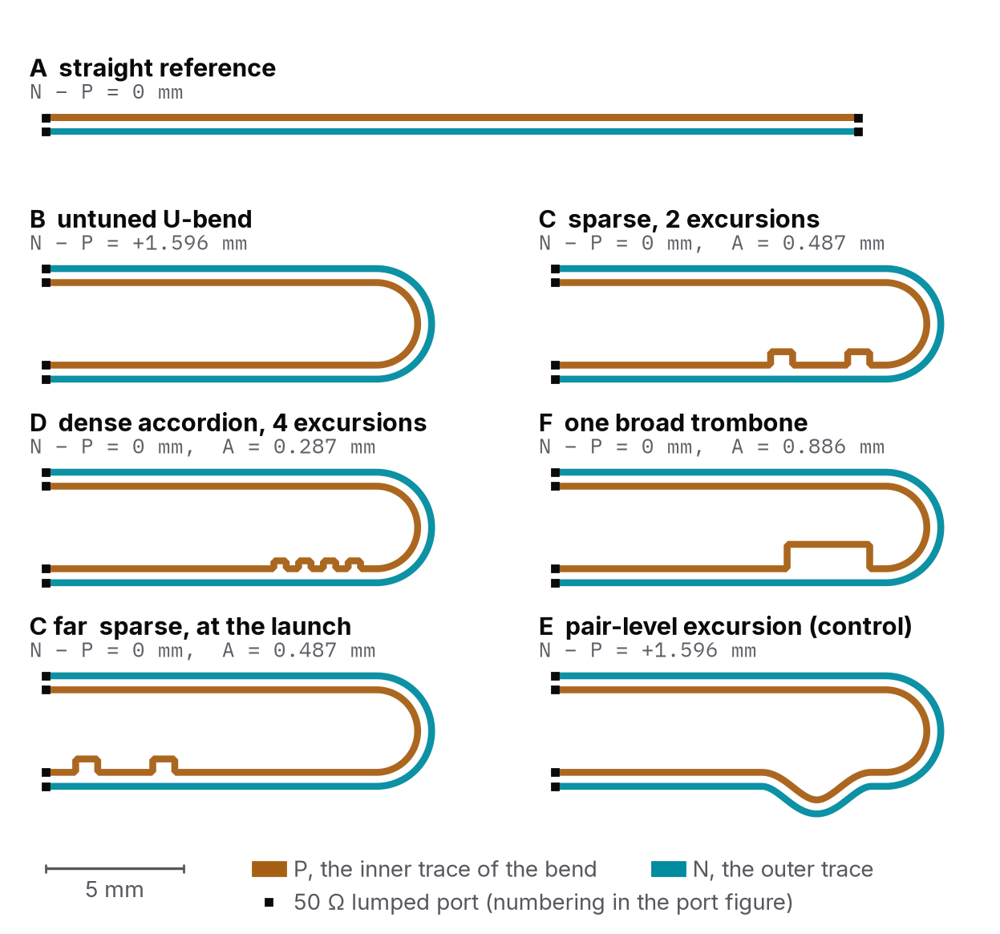
The variants, drawn from the copper the solver sees.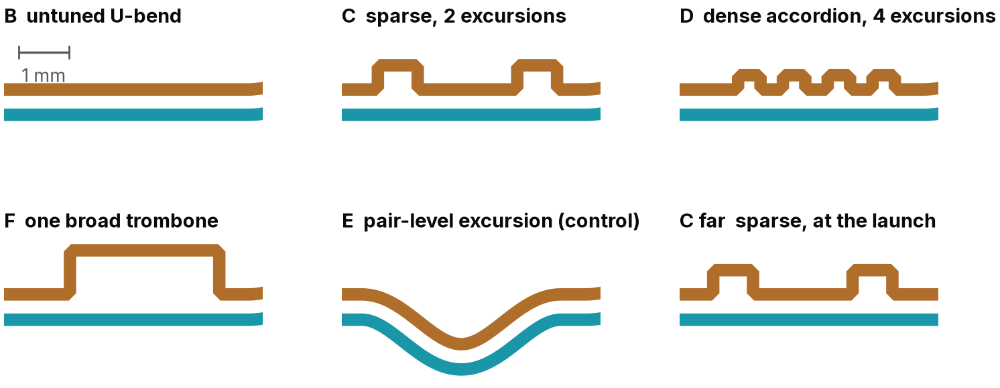
The tuning sections at one scale.Each variant is four runs of openEMS, one per excited port, with 50 Ω lumped ports at each trace end. That gives a full 4×4 S-matrix, which scikit-rf turns into mixed-mode parameters, and a differential step with a 50 ps edge turns into the waveforms at the far end. In all we made 140 solver runs. The untuned bend and two of the tunings were also solved on finer and coarser meshes: the bend's skew moves by ±0.05 ps between them, C's by ±0.3 ps, and the dense accordion's, whose features are the smallest, by ±0.4 ps.
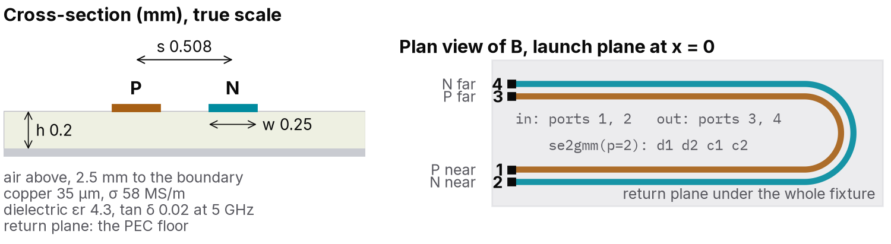
Ports, cross-section and the pipeline.Matching the lengths does not match the delay
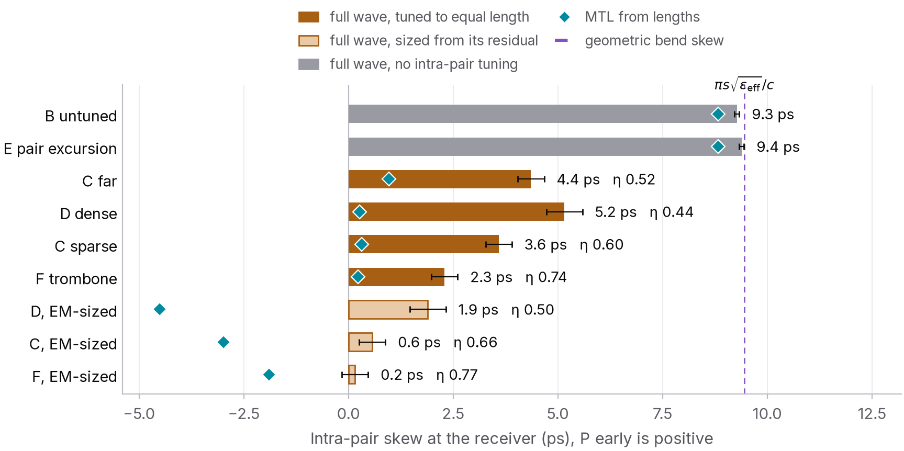
Skew at the receiver for each variant. Copper bars are tuned to exactly equal length.| Variant | What it is | Skew left | Share of the bend's skew removed |
|---|---|---|---|
| B | untuned bend | 9.3 ps | none |
| F | one broad trombone | 2.3 ps | 75 % |
| C | two sparse excursions | 3.6 ps | 61 % |
| C far | the same, at the launch | 4.4 ps | 53 % |
| D | dense accordion, four excursions | 5.2 ps | 44 % |
| E | pair-level excursion | 9.4 ps | none, by design |
Every tuned variant has P and N exactly the same length, and every one still lets P arrive first. The waveforms show it directly:
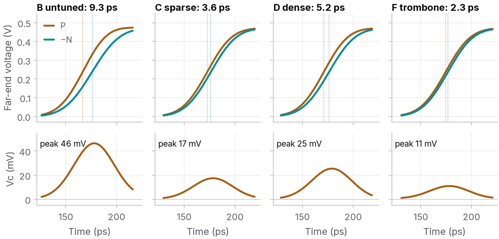
Far-end P and −N, and the common-mode voltage, for a 50 ps edge.The more excursions, the less of the skew comes back. One excursion removed 75 %, two removed 61 %, four removed 44 %.
Where the delay goes
We built a two-conductor transmission-line model of every variant, calibrated on the solver's own straight pair, so its coupled lines are the solver's coupled lines. It knows every length exactly. It predicts 0.2, 0.3 and 0.3 ps for F, C and D. So length is not what is missing. What the line model does not know is the corners of each excursion and the coupling between its folds.
To pull those two apart we ran one more experiment: a straight pair with 6 mm added to one trace in three excursions, once with the folds 1.0 mm apart and once 0.15 mm apart (our clearance rule). Same corners, same added length. We define a delay efficiency η as the delay the tuning actually adds, divided by what its length predicts.
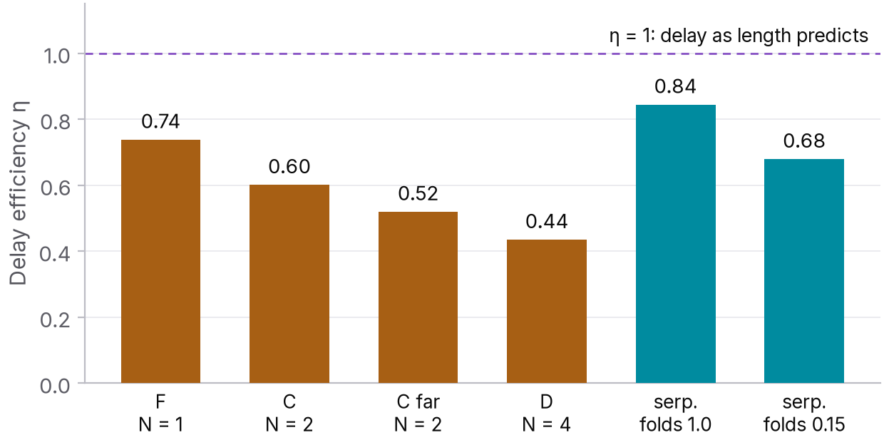
Delay efficiency of each tuning style.With loose folds η = 0.84. Packing the folds to the clearance rule took it to 0.68, and on every mesh we tried the tight folds came out 17 to 25 points lower: that is the fold coupling that Wu and Chao and Rubin and Singh described for single-ended meanders. The loose serpentine's own shortfall we attribute to its corners. In the bend corrections each excursion cost 1.2 to 2.1 ps of delay that its length says it should have added. That cost does not shrink with the excursion's size, so a fix made of many small excursions under-delivers the most.
Stripline does the same
Microstrip has two propagation velocities, one per mode, so it was fair to ask whether all this is a microstrip quirk. We put the same copper between two planes and solved it again. Stripline is homogeneous, and geometry predicts its bend to 0.6 % (10.97 ps against 11.04 ps). The length-matched tunings removed 81, 64 and 42 % of the skew, close to microstrip's 75, 61 and 44 %. Tight folds still cost 20 points of efficiency. We had expected that to shrink, since far-end coupling between parallel lines vanishes in stripline. It did not: adjacent folds carry current in opposite directions, so the coupling that shortcuts them is backward coupling, and stripline has that too.
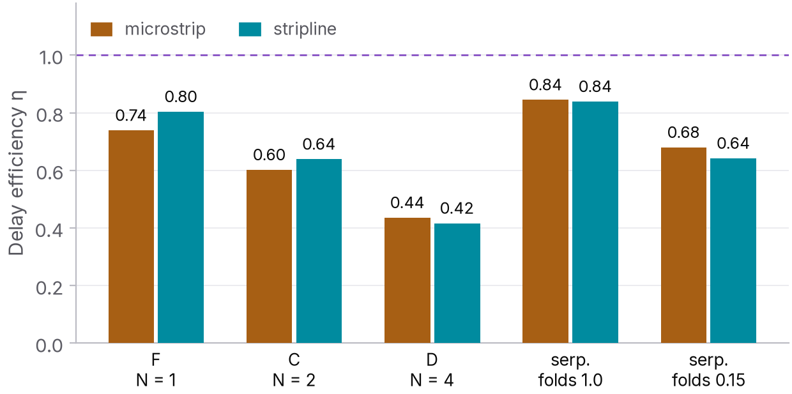
Delay efficiency of the same copper in microstrip and stripline.Where you put it matters at high frequency
C far is the same tuning as C, moved next to the launch. Its arrival skew is similar (4.4 ps against 3.6 ps). Its mode conversion is not: between the tuning and the bend the pair carries skew the other way, and the two corrections drift out of phase as frequency rises. Read as a skew, C far's grows from 4.1 ps at 5 GHz to 6.5 ps at 25 GHz, while C stays flat.
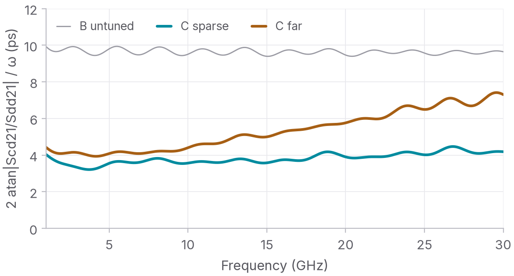
Skew read from Scd21/Sdd21 at each frequency.The trombone pays in impedance
The broad trombone removed the most skew, but its trace leaves its partner for 3 mm, and the differential impedance there rises to 114 Ω against 107 Ω for the plain bend. Its return loss is the worst of the set (-16.8 dB against -20.7 dB).
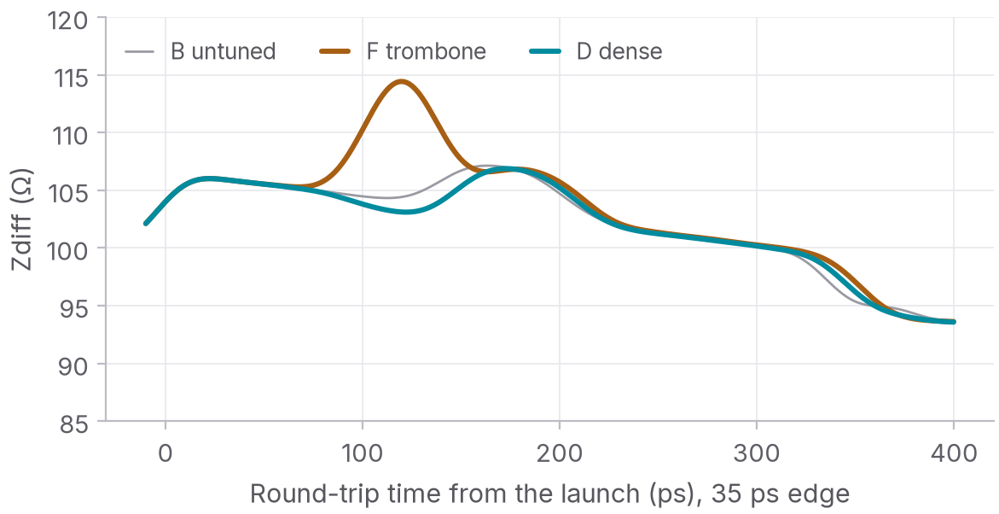
Differential TDR, 35 ps edge.What 9 ps of skew does to a signal
At 16 Gb/s with 35 ps edges, the untuned bend closes the differential eye from 92.9 % to 91.1 % of the swing. That is small. What it does more of is turn the signal into common mode: 13.6 % of the swing peak to peak at the receiver, against 3.3 % for the trombone and 5.4 % for C. A receiver with good common-mode rejection will not notice the timing. Whether the common mode becomes an emissions problem depends on the rest of the board, which this study does not model.
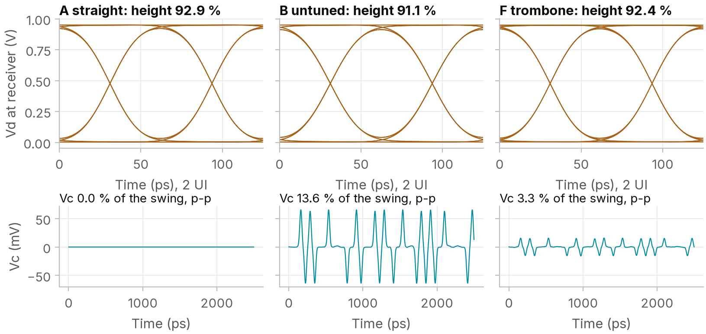
16 Gb/s eyes and the common mode at the receiver.Sizing the tuning by its effect
If each excursion loses a fixed amount, the fix is to add that amount back. We lengthened C, D and F by their own residual, converted to length at the rate the bend shows. By CAD measure P is now longer than N, and a length-based model says these versions overshoot, to -1.9 ps for the trombone, -3.0 ps for C and -4.5 ps for D. In the solver the skew became 0.2 ps for the trombone and 0.6 ps for C: one iteration was enough. The dense accordion came down only to 1.9 ps. Lengthening its tightly packed verticals also strengthens the coupling between them, so each extra millimetre delivered 62 % of the delay it should have, against 83 % for C and 92 % for the trombone. A dense accordion needs a second iteration; a sparse or broad one is calibrated by one field solution, or one set of coupons, per stackup.
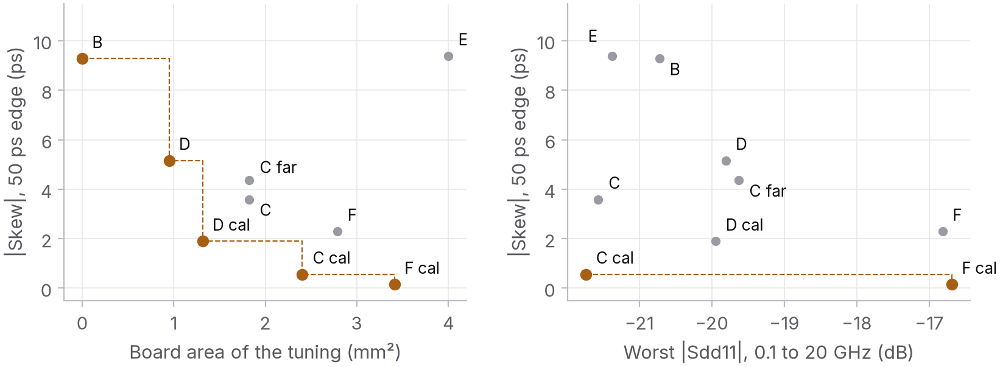
Four objectives, two projections: skew against area and against return loss.Rules of thumb
For edge-coupled pairs at about this pitch, in microstrip or stripline, and with the caveat that these are simulations:
- Trust geometry for the bend. Do not trust it for the fix: budget a residual of a few picoseconds, or size the tuning from a field solution or a coupon.
- Use few excursions. Each one costs delay in its corners whatever its size.
- Keep the folds apart. At the clearance rule the folds cost 17 to 25 points of efficiency.
- Tune next to the mismatch, not at the end of the route.
- Keep a broad excursion short, or it shows up in the TDR.
- Swinging the whole pair out does not fix intra-pair skew.
- None of this goes away in stripline.
What this is and is not
Everything above is simulated: one width and one pitch in one microstrip and one stripline stackup, lumped ports, perfect return planes and a conducting-sheet copper model. Nothing was built or measured. The full report covers the method, the mesh convergence, the numerical checks, a coupon plan to test these predictions on hardware, and the limitations.
The report, the scripts, the S-parameter files and every figure are in the study's repository. Every number in this post is read from the simulation results by a script, not typed in.